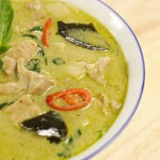

Green Curry

Description
Green curry originates from Southeast Asia and is a very common meal in many countries in Asia. The dish is packed with flavor and nutrients, and is quick to make!
Ingredients
- 2 tsp coriander seeds
- 1 tsp cumin seeds
- 1/2 tsp white peppercorns
- 15 Thai green chili peppers
- 1 tsp salt
- 15 Thai basil leaves
- 3 TBSP lemongrass
- 1 TBSP galangal
- 2 tsp kaffir lime zest
- 2 tsp cilantro roots
- 3 TBSP shallots
- 2 TBSP garlic
- 1 tsp fermented shrimp paste (gapi)
Steps
- 1. Reduce ¾ cup coconut milk until thick and coconut oil starts to separate from the coconut milk (if the oil doesn’t separate after it has reduced until very thick, it's okay, just proceed with the recipe).
- 2. Add curry paste and sauté, stirring constantly over medium heat for about 2 minutes until aromatic. If paste sticks to the bottom of the pan, you can deglaze with a little bit of the remaining coconut milk.
- 3. Add chicken thigh and stir to mix with the paste. (See below if using chicken breast).
- 4. Add kaffir lime leaves, chicken stock, remaining 1 cup of coconut milk, palm sugar and 1 Tbsp fish sauce. Bring to a simmer and let simmer gently for 10-15 minutes or until the chicken is fork tender.
- 5. Once the curry is done simmering, add bamboo shoots and bring to a boil. If you prefer your peppers to be more cooked, add them at this stage. Once boiling, remove from heat.
- 6. Taste and add more fish sauce and/or sugar as needed.
- 7. Stir in Thai basil and spur chilies or bell peppers.
- 8. Serve with jasmine rice